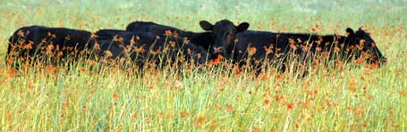

Healthy Grass-Fed Beef
Discover five benefits of eating beef from pasture-raised cattle.
Stephanie Lingafelter
December/January 2005
Beef from a cow raised on pasture is a safer choice than feedlot beef, offers richer flavor and more nutrition, and is even healthier for you than a chicken breast. Here are five benefits of eating pasture-raised cattle:
- Grass-fed beef is one-third to three times leaner than conventional grain-fed beef, and as a consequence has fewer calories, too.
- Grass-fed beef has two to four times more essential omega-3 fatty acids than feedlot beef. It also contains more beta carotene, vitamin E and folic acid.
- Researchers have found grass-fed beef contains two newly discovered 'good' fats: conjugated linoleic acid (CLA) and trans-vaccenic acid (TVA). CLA shows great promise in lab animal studies of helping fight cancers and cardiovascular disease.
- Grass-fed beef has no extra hormones or traces of antibiotics. The animals also live a low-stress life, grazing outside on pasture, in contrast to the stinking, dusty, shadeless conditions in most commercial feedlots.
- Bovine Spongiform Encephalopathy (BSE, or more commonly, mad cow disease), has not been found in grass-finished animals. And grass-finished cattle are also less likely to be contaminated with acid-resistant forms of E. coli, a serious food-borne bacteria.
The following Web sites allow you to find grass-finished meat in your area by entering your Zip code or city and state: Eat Wild, Local Harvest and Eat Well Guide.
To learn more about pastured and grass-fed meat, visit our Safe Meat Page.

BRYAN WELCH
Angus, particularly old-style Angus, is a breed well adapted to grass-fed production.
|
|
|